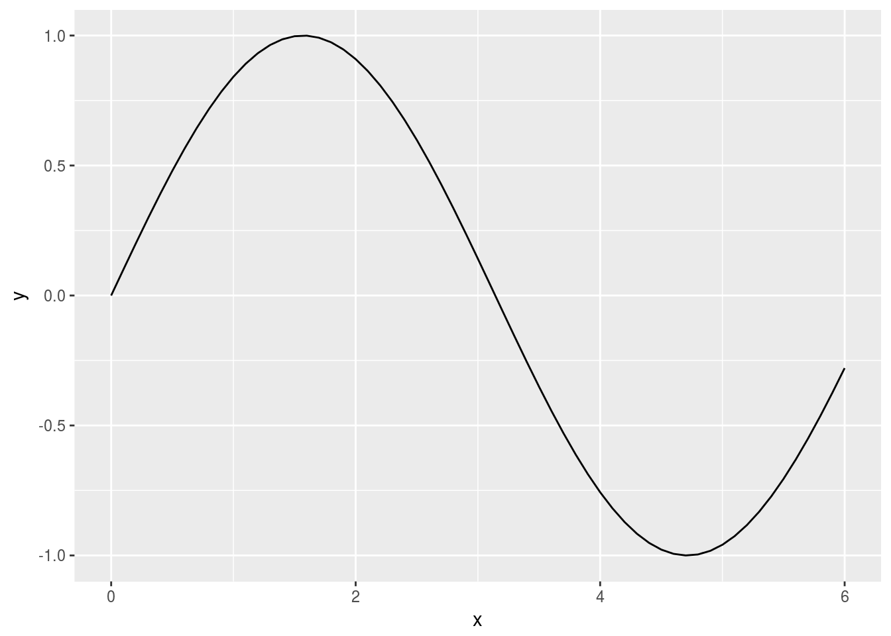
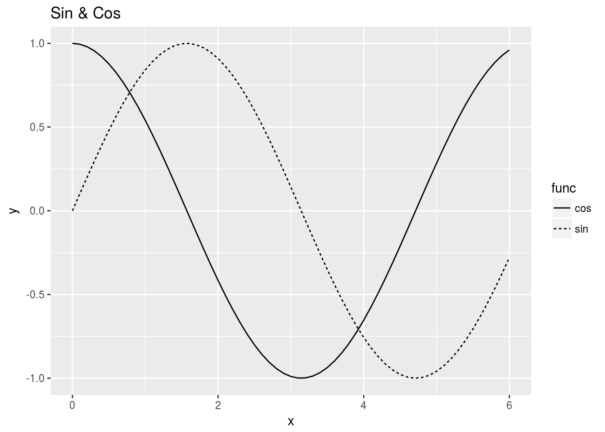

1 Introduction to R, and some remarks on differences from Python
This chapter corresponds to Cahpter 1, “Introruction to Python” in the original book.
1.1 Data types
We will use class function to know the variable types. Notice that type of 10 is numeric not integer. Append L to make it treated as an integer.
class(10)## [1] "numeric"class(10L)## [1] "integer"class(2.718)## [1] "numeric"class("hello")## [1] "character"1.2 Variables
Like Python, R also supports dynamic typing.
x <- 100L
y <- 3.14
x*y## [1] 314class(x*y)## [1] "numeric"1.3 List and vectors
For basic types such as numeric and character, we can make a vector by c function. R uses one-base indexing (index starts with 1, not 0).
a <- c(1,2,3,4,5)
a## [1] 1 2 3 4 5length(a)## [1] 5a[1]## [1] 1a[5]## [1] 5a[5] <- 99
a## [1] 1 2 3 4 99What is more similar to python’s list would be list, since it can have different types of elements. Use [[ to access list elements.
a <- list(1,2,3,4,5)
a## [[1]]
## [1] 1
##
## [[2]]
## [1] 2
##
## [[3]]
## [1] 3
##
## [[4]]
## [1] 4
##
## [[5]]
## [1] 5length(a)## [1] 5a[[1]]## [1] 1a[[5]]## [1] 5a[[5]] <- 99
a## [[1]]
## [1] 1
##
## [[2]]
## [1] 2
##
## [[3]]
## [1] 3
##
## [[4]]
## [1] 4
##
## [[5]]
## [1] 991.4 Dictionary, and hash table
Vectors and lists can have names, with which we can use them like a dictionary.
## Vector
me <- c(height = 180)
me["height"]## height
## 180me["weight"] <- 70
me## height weight
## 180 70## List
me <- list(height = 180)
me$height## [1] 180me$weight <- 70
me## $height
## [1] 180
##
## $weight
## [1] 70Alternatively, we can use hash function from hash library.
library(hash)## hash-2.2.6 provided by Decision Patternsme <- hash(height = 180)
me$height## $height
## [1] 180me$weight <- 70
me## <hash> containing 2 key-value pair(s).
## height : 180
## weight : 701.5 Boolean or logicals
In R, boolean variables called logical and have values TRUE or FALSE.
hungry <- TRUE
sleepy <- FALSE
class(hungry)## [1] "logical"!hungry## [1] FALSEhungry & sleepy## [1] FALSEhungry | sleepy## [1] TRUE1.6 If-statement
hungry <- TRUE
if (hungry) print("I'm hungry")## [1] "I'm hungry"hungry <- FALSE
if (hungry) {
print("I'm hungry")
} else {
print("I'm not hungry")
print("I'm sleepy")
}## [1] "I'm not hungry"
## [1] "I'm sleepy"1.7 For loop
for (i in 1:3) print(i)## [1] 1
## [1] 2
## [1] 31.8 Functions
hello <- function()
{
print("Hello World!")
}
hello()## [1] "Hello World!"hello <- function(object)
{
print(sprintf("Hello %s!", object))
}
hello("cat")## [1] "Hello cat!"1.9 Script File
To run a script file from R session, use source function.
source("hungry.R")## [1] "I'm hungry!"To run a script file from console, call Rscript.
$ Rscript hungry.R
[1] "I'm hungry!"1.10 Class
R has various ways to define classes. In this exercise, we will use R6 implementation. See more about object oriented programming in R, see Hadley’s Advanced R.
library(R6)
Man <- R6Class(
"Man",
public = list(
name = "",
initialize = function(name) { self$name <- name },
hello = function() { print(sprintf("Hello %s!", self$name)) },
goodbye = function() { print(sprintf("Gooe-bye %s!", self$name)) }
)
)
m <- Man$new("David")
m$hello()## [1] "Hello David!"m$goodbye()## [1] "Gooe-bye David!"1.11 Matrix and array
What’s similar to numpy’s arrays in R is vector (1d), matrix (2d) and array (3d+).
x <- c(1,2,3)
y <- c(2,4,6)
x+y## [1] 3 6 9x*y## [1] 2 8 18x/y## [1] 0.5 0.5 0.5x/2## [1] 0.5 1.0 1.5A <- matrix(c(1,2,3,4), nrow=2, ncol=2, byrow=TRUE)
A## [,1] [,2]
## [1,] 1 2
## [2,] 3 4dim(A)## [1] 2 2B <- matrix(c(3,0,0,6), nrow=2, ncol=2, byrow=TRUE)
A+B## [,1] [,2]
## [1,] 4 2
## [2,] 3 10A*B## [,1] [,2]
## [1,] 3 0
## [2,] 0 24A*10## [,1] [,2]
## [1,] 10 20
## [2,] 30 401.12 Broadcast
R’s broadcast rule is the opposite of that of python.
A <- matrix(c(1,2,3,4), nrow=2, ncol=2, byrow=TRUE)
B <- c(10,20)
A*B## [,1] [,2]
## [1,] 10 20
## [2,] 60 80# to reproduce the book's result,
A <- matrix(c(1,2,3,4), nrow=2, ncol=2, byrow=FALSE)
B <- c(10,20)
t(A*B)## [,1] [,2]
## [1,] 10 40
## [2,] 30 801.13 Array
x <- array(1, dim=c(4,3,2))
x## , , 1
##
## [,1] [,2] [,3]
## [1,] 1 1 1
## [2,] 1 1 1
## [3,] 1 1 1
## [4,] 1 1 1
##
## , , 2
##
## [,1] [,2] [,3]
## [1,] 1 1 1
## [2,] 1 1 1
## [3,] 1 1 1
## [4,] 1 1 1y <- 1:8
x*y## , , 1
##
## [,1] [,2] [,3]
## [1,] 1 5 1
## [2,] 2 6 2
## [3,] 3 7 3
## [4,] 4 8 4
##
## , , 2
##
## [,1] [,2] [,3]
## [1,] 5 1 5
## [2,] 6 2 6
## [3,] 7 3 7
## [4,] 8 4 81.14 Access matrix/array elements
X <- matrix(c(51,55,14,19,0,4), nrow=3, ncol=2, byrow=TRUE)
X## [,1] [,2]
## [1,] 51 55
## [2,] 14 19
## [3,] 0 4X[1,]## [1] 51 55X[1,2]## [1] 55for (i in 1:nrow(X)) print(X[i,])## [1] 51 55
## [1] 14 19
## [1] 0 4Elements are tracked by “column” first way in R. So flattening behavior is different from Python.
dim(X) <- prod(dim(X))
X## [1] 51 14 0 55 19 4# to reproduce the book result,
X <- matrix(c(51,55,14,19,0,4), nrow=3, ncol=2, byrow=FALSE)
dim(X) <- prod(dim(X))
X## [1] 51 55 14 19 0 4X[c(1,3,5)]## [1] 51 14 0X > 15## [1] TRUE TRUE FALSE TRUE FALSE FALSEX[X > 15]## [1] 51 55 191.15 Plot
R has various ways to visualize data. In this exercise, we will use ggplot2 library.
library(ggplot2)
x <- seq(0, 6, 0.1)
y <- sin(x)
qplot(x, y, geom="line")
y1 <- sin(x)
y2 <- cos(x)
tmp <- rbind(data.frame(x=x, y=y1, func="sin", stringsAsFactors=FALSE),
data.frame(x=x, y=y2, func="cos", stringsAsFactors=FALSE))
ggplot(tmp, aes(x, y, linetype=func)) + geom_line() + ggtitle("Sin & Cos")
1.16 Image plot
To read a png format image file, use readPNG from png library. It is loaded as a 3d array of shape (nrow, ncol, channel). To visualize image, we can use grid.raster from grid library.
library(png)
img <- readPNG("dataset/lena.png")
str(img)## num [1:256, 1:256, 1:3] 0.875 0.882 0.89 0.89 0.878 ...library(grid)
grid.raster(img)grid.raster does not return graphic object. To use image plot as if it is a ggplot object, we will use the following custom function.
image_plot <- function(arr)
{
out <- grid::rasterGrob(arr)
out <- ggplot2::qplot(0.5, 0.5, xlim=c(0,1), ylim=c(0,1)) +
ggplot2::theme_void() + ggplot2::xlab('') + ggplot2::ylab('') +
ggplot2::annotation_custom(out)
out
}
image_plot(img)class(image_plot(img))## [1] "gg" "ggplot"